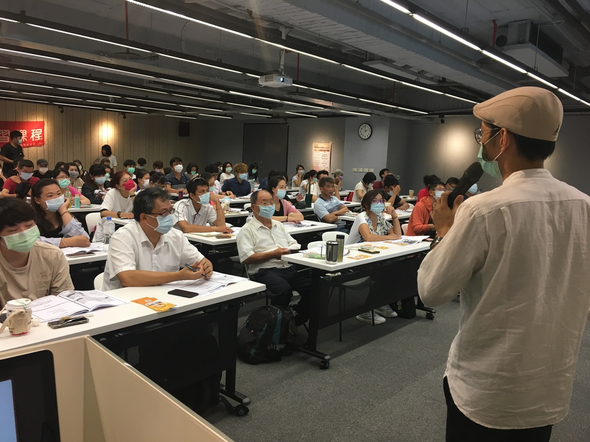

PM / BA Portfolio
歸維邦 Josh Kuei
Operations-driven PM / BA · PMP · PSM I · 桃園市楊梅區
我把通路營運、客戶溝通與跨部門協調經驗，轉化成可追蹤、可溝通、可交付的數位專案。
過去橫跨大型通路、B2B 流程工具與 AI multi-agent 產品實驗，強項是需求釐清、範圍取捨、時程控管與成果審查。
數位專案管理
Business Analyst
產品營運
系統導入
AI 工具應用
7-Eleven
自有品牌進入全國通路與 19 縣市
PMP
PMP、PSM I、Google PM、TOEIC 775
2
AI / 數位產品專案：保險 Bot、TOEIC Snack
Selected Case Studies
三個可深入閱讀的 PM Case Study
點進每個案例可查看完整背景、決策、證據與反思。每個案例都不是只展示「做了什麼」，而是展示我如何判斷問題、設定範圍、協調資源，並在不確定中做取捨。
Capability Matrix
我想讓招募方快速看到的能力
需求釐清與規格化
能把現場問題、客戶語言與營運流程整理成 PRD、流程、驗收條件與非目標。
跨部門與外部協作
熟悉通路、物流、客戶、工程與外部合作窗口之間的時程與責任控管。
營運與成本判斷
能從單位成本、供應鏈、使用者行為與商業可行性回推產品範圍。
PM artifacts
實作過 WBS、Gantt、ADR、Risk Register、Non-Goals、測試與迭代紀錄。
AI 協作導入
能把 AI 工具當成協作角色，拆任務、寫 spec、控品質、做交接與審查。
教育訓練與轉譯
曾任政府創業課程講師，能把政策、技術或流程轉成可理解的教材與溝通內容。
Facilitation & Knowledge Transfer
講師經驗：把政策與商業知識轉成可理解的行動方案

公開授課現場
面對非技術與創業初期學員，將政策、創業準備、風險評估與資源運用轉成可執行的課程內容。
政府創業課程授課紀錄 官方紀錄
課程主題包含創業準備、商機選擇、產業趨勢、風險評估、適性評量、政府資源運用與貸款說明。
Business Analyst
訪談、流程分析、PRD 與驗收條件。
系統導入 PM
協調使用者、供應商、工程與上線節奏。
AI 應用 PM
用 AI 工具加速規格、測試、文件與交付。
我的 PM 主軸：真正難的不是知道要做什麼，而是知道什麼時候該停。良野、保險 Bot、TOEIC Snack 都在呈現同一種紀律：有意識地選擇不做某些事，讓專案能被交付。